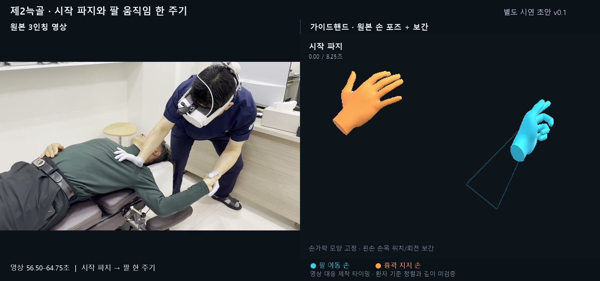
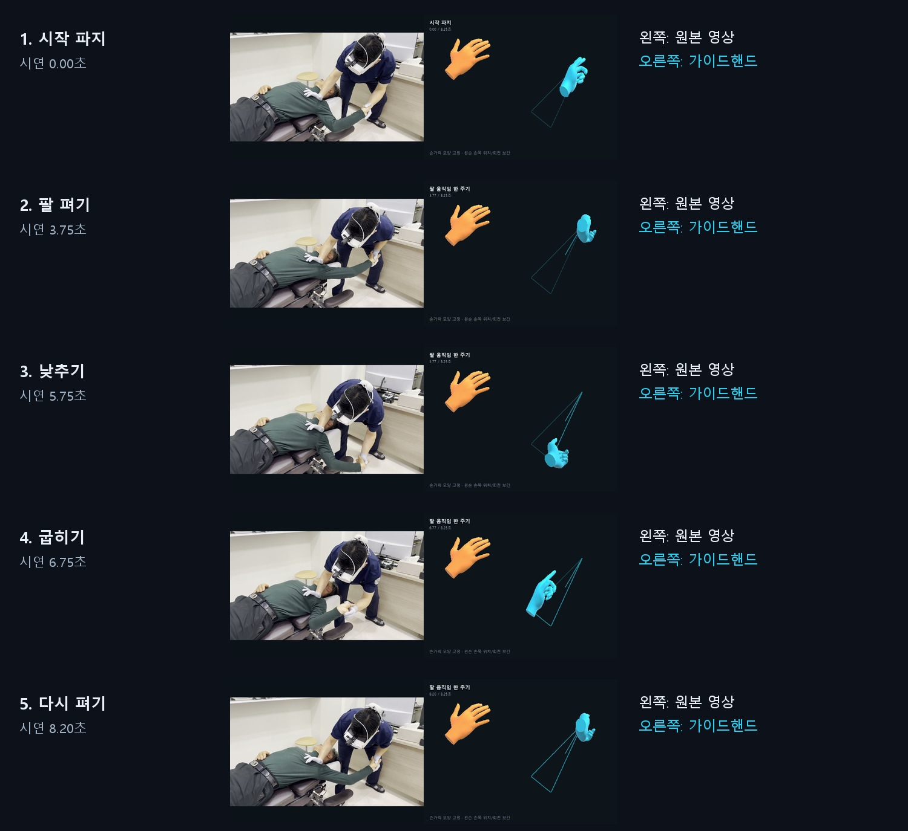

제2늑골 · 원본과 가이드핸드 초안
별도 시연 V0.1 · 2026.10.26
왼쪽 원본 영상과 오른쪽 가이드핸드의 시작 파지, 손 방향, 이동 흐름을 비교하세요.
시작 파지 0~1.5초 · 팔 한 주기 3.75~8.25초
청록: 팔을 움직이는 왼손
주황: 흉곽을 지지하는 오른손
원본 트래킹의 키자세를 영상 흐름에 맞춰 보간한 제작 초안입니다. 영상과 트래킹의 정밀 동기화 및 실제 환자 정렬은 미검증입니다.
정지 장면으로 비교

시작 파지 — 손가락 모양과 양손의 상대 위치를 비교하는 장면입니다.

주요 자세 — 원본에서 고른 장면에 트래킹 키자세를 대응했습니다. 중간 움직임과 복귀 끝 자세에는 제작 보정이 들어갔습니다.